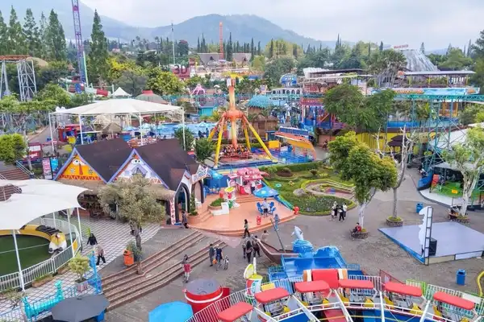

Daftar Isi
Wisata Kota Batu di Jawa Timur menawarkan taman rekreasi, wisata alam, agrowisata, dan kuliner berhawa sejuk yang cocok untuk keluarga, pasangan, dan pelancong akhir pekan.
- Kota Batu adalah kota wisata dataran tinggi di Jawa Timur dengan taman rekreasi, wisata alam, agrowisata, dan kuliner.
- Dinas Pariwisata Kota Batu mencatat 778.235 kunjungan selama libur Lebaran 2025, lebih tinggi dari 564.622 kunjungan pada periode serupa 2024. antaranews
- Rekapitulasi sementara mencatat 242.689 kunjungan wisatawan pada 22 Juni hingga 6 Juli 2026. rri
- Waktu kunjungan, kawasan menginap, dan jenis destinasi sebaiknya disesuaikan dengan siapa yang berlibur.
- Panduan lanjutan tersedia untuk wisata keluarga, wisata alam, dan tips perencanaan liburan.
Seberapa Ramai Wisata Kota Batu?
Wisata Kota Batu tergolong sangat ramai pada musim libur, dengan ratusan ribu kunjungan tercatat dalam satu periode libur nasional maupun libur sekolah.
Dinas Pariwisata Kota Batu, sebagaimana dikutip Antara, mencatat 778.235 wisatawan selama libur Lebaran 2025, dibandingkan 564.622 wisatawan pada momen serupa tahun 2024. Angka itu bersifat sementara karena baru mencakup 89,23 persen data yang terkumpul. antaranews
Rinciannya terdiri atas 58.552 kunjungan pada jasa akomodasi dan 719.683 kunjungan pada daya tarik wisata, dari pendataan 90 usaha akomodasi dan 45 daya tarik wisata. Alun-Alun Kota Batu menjadi tujuan terbanyak dengan 400.042 kunjungan, disusul Desa Wisata Sidomulyo dengan 78.256 kunjungan dan Jawa Timur Park 2 dengan 44.776 kunjungan. antaranews
Untuk periode yang lebih baru, RRI melaporkan pada 7 Juli 2026 bahwa rekapitulasi sementara Dinas Pariwisata Kota Batu mencapai 242.689 kunjungan sejak 22 Juni hingga 6 Juli 2026. Data tersebut berasal dari sampel usaha akomodasi dan daya tarik wisata yang dipantau, sehingga jumlah sebenarnya dapat berbeda. rri
Bagi pelancong, angka ini berarti destinasi populer di Kota Batu cenderung padat pada masa libur.

Wisata Kota Batu selalu menjadi daya tarik utama wisatawan saat musim liburan.

Liburan Seru Bareng Circle Kamu!
Ayo jelajahi pesona Malang Raya bersama tim profesional dan paket penawaran spesial kami. Hubungi admin sekarang!
Chat Admin SekarangApa Itu Wisata Kota Batu?
Wisata Kota Batu adalah rangkaian daya tarik di Kota Batu, Jawa Timur, yang mencakup taman rekreasi, alam pegunungan, agrowisata, desa wisata, dan kuliner.
Kota Batu adalah kota administratif di Provinsi Jawa Timur yang berbatasan dengan Kabupaten Malang dan terdiri atas tiga kecamatan, yaitu Batu, Bumiaji, dan Junrejo. Kota ini berada di dataran tinggi sehingga udaranya umumnya lebih sejuk daripada kawasan sekitarnya.
Wisata Kota Batu ditujukan bagi keluarga, pasangan, rombongan sekolah, dan pelancong akhir pekan dari Malang Raya maupun kota lain di Jawa Timur. Pelancong biasanya memilih Kota Batu ketika menginginkan banyak pilihan aktivitas dalam jarak yang berdekatan.
Manfaat utamanya adalah variasi atraksi, suasana sejuk, dan akses ke produk lokal seperti apel. Batasannya, destinasi populer dapat padat pada akhir pekan dan musim libur, sehingga perencanaan yang matang sangat membantu.
Apa Saja Jenis Wisata di Kota Batu?
Jenis wisata di Kota Batu terbagi menjadi empat kelompok utama: taman rekreasi, wisata alam, agrowisata dan desa wisata, serta wisata malam dan kuliner.
- Apa yang ditawarkan taman rekreasi di Kota Batu? Taman rekreasi di Kota Batu mencakup taman tematik, kebun binatang, museum, dan wahana permainan. Contohnya kelompok Jawa Timur Park, Museum Angkut, dan Batu Night Spectacular. Jenis ini cocok untuk keluarga dengan anak karena satu lokasi dapat memuat banyak aktivitas.
- Apa saja pilihan wisata alam di Kota Batu? Wisata alam di Kota Batu mencakup air terjun yang disebut coban, bukit dan titik pandang, pendakian gunung, serta paralayang. Coban Talun dan Paralayang Gunung Banyak termasuk nama yang dikenal. Cuaca memengaruhi keamanan dan kenyamanan, terutama pada musim hujan.
- Apakah Kota Batu punya agrowisata dan desa wisata? Ya. Kota Batu dikenal dengan kebun apel dan hortikultura, dan sejumlah lokasi menawarkan petik buah serta edukasi pertanian. Desa Wisata Sidomulyo tercatat sebagai salah satu tujuan dengan kunjungan tinggi pada libur Lebaran 2025.
- Apa pilihan wisata malam dan kuliner di Kota Batu? Wisata malam di Kota Batu mencakup taman lampu dan suasana Alun-Alun. Kulinernya meliputi hidangan hangat yang sesuai dengan udara sejuk, serta olahan apel yang populer sebagai oleh-oleh. Ketersediaan dan jam buka setiap tempat dapat bervariasi.
Apa Saja Destinasi Populer di Kota Batu?
Destinasi populer di Kota Batu meliputi Alun-Alun Kota Batu, Jawa Timur Park, Batu Night Spectacular, Coban Talun, Paralayang Gunung Banyak, dan Desa Wisata Sidomulyo.
- Alun-Alun Kota Batu: ruang publik di pusat kota yang menjadi tujuan terbanyak pada libur Lebaran 2025 dengan 400.042 kunjungan menurut data Dinas Pariwisata Kota Batu.
- Jawa Timur Park: kelompok taman rekreasi keluarga. Jawa Timur Park 2 memiliki kebun binatang dan wahana, sedangkan Jawa Timur Park 3 memiliki area bertema dinosaurus.
- Museum Angkut: museum bertema transportasi yang cocok untuk pengunjung yang menyukai kendaraan dan sejarah.
- Batu Night Spectacular: taman hiburan yang ramai pada malam hari dengan tata cahaya.
- Coban Talun: air terjun di kawasan perbukitan untuk pelancong yang mencari suasana alam.
- Paralayang Gunung Banyak: lokasi olahraga paralayang yang juga dikunjungi wisatawan umum untuk menikmati pemandangan dari ketinggian.
- Desa Wisata Sidomulyo: desa wisata dengan 78.256 kunjungan pada libur Lebaran 2025.
Tarif tiket, jam operasional, dan aturan pengunjung setiap destinasi dapat berubah, sehingga pelancong perlu memeriksanya langsung pada kanal resmi pengelola.
Kapan Waktu Terbaik Berkunjung ke Kota Batu?
Waktu terbaik berkunjung ke Kota Batu adalah hari kerja di luar musim libur, karena antrean lebih pendek dan lalu lintas cenderung lebih lancar.
Data kunjungan menunjukkan lonjakan pada libur Lebaran dan libur sekolah, sehingga periode tersebut umumnya paling padat. Pelancong yang fleksibel dapat memilih hari kerja untuk mendapatkan pengalaman yang lebih nyaman.
Musim kemarau umumnya lebih cocok untuk wisata alam terbuka. Musim hujan menuntut kewaspadaan pada jalur licin dan kabut. Aktivitas luar ruangan biasanya lebih nyaman pada pagi hari, sedangkan taman malam lebih tepat dikunjungi selepas sore.
Bagaimana Cara Menuju Kota Batu?
Kota Batu dapat dicapai lewat jalur darat dari Kota Malang, yang berjarak sekitar 20 kilometer, menggunakan kendaraan pribadi, taksi daring, atau angkutan umum.
Dari Kota Malang, perjalanan darat ke Kota Batu umumnya memakan waktu sekitar 45 menit hingga 1,5 jam, tergantung kepadatan lalu lintas. Pada akhir pekan dan libur panjang, waktu tempuh dapat lebih lama.
Pelancong dari Surabaya umumnya menggunakan jalur tol menuju Malang lalu melanjutkan ke Kota Batu. Pelancong dari luar Jawa Timur dapat tiba melalui Bandara Juanda di Surabaya atau Bandara Abdul Rachman Saleh di Malang, kemudian melanjutkan perjalanan darat. Kereta api tersedia sampai Stasiun Malang, dan perjalanan ke Kota Batu dilanjutkan dengan kendaraan lain.
Di Mana Sebaiknya Menginap di Kota Batu?
Pilihan menginap di Kota Batu mencakup hotel, vila, homestay, dan glamping, dan lokasi terbaik bergantung pada destinasi utama yang ingin dikunjungi.
Kawasan pusat kota memudahkan akses ke Alun-Alun dan tempat makan. Kawasan perbukitan menawarkan pemandangan dan suasana tenang, tetapi jalan menuju lokasi dapat lebih menanjak dan sempit.
Vila cocok untuk rombongan besar karena menyediakan ruang bersama. Hotel cocok untuk pelancong yang mengutamakan layanan dan fasilitas standar. Homestay cocok untuk pelancong yang ingin suasana lokal dengan anggaran lebih terkendali.
Bagaimana Menyusun Itinerary Wisata Kota Batu?
Itinerary wisata Kota Batu paling efektif disusun per kawasan, dengan maksimal dua destinasi utama per hari agar perjalanan tidak melelahkan dan tidak terburu-buru.
- Contoh itinerary satu hari: kunjungi wisata alam atau agrowisata pada pagi hari, makan siang di tempat makan lokal, lalu habiskan sore hingga malam di taman rekreasi atau Alun-Alun Kota Batu.
- Contoh itinerary dua hari: hari pertama untuk taman rekreasi dan wisata malam, hari kedua untuk wisata alam, agrowisata, dan belanja oleh-oleh sebelum pulang.
Kelompokkan destinasi yang berdekatan agar waktu di jalan berkurang. Sisakan waktu longgar untuk istirahat, terutama bila membawa anak atau orang lanjut usia.
Jenis Wisata Kota Batu Mana yang Cocok untuk Anda?
| Jenis wisata | Cocok untuk | Kelebihan | Batasan |
|---|---|---|---|
| Taman rekreasi | Keluarga dengan anak | Banyak aktivitas dalam satu lokasi | Dapat padat dan memakan biaya lebih besar |
| Wisata alam | Pasangan, pencinta alam | Pemandangan dan udara segar | Bergantung pada cuaca dan kondisi jalur |
| Agrowisata dan desa wisata | Keluarga, rombongan sekolah | Edukatif dan dekat dengan warga | Ketersediaan aktivitas dapat bergantung musim |
| Wisata malam dan kuliner | Pasangan, rombongan teman | Suasana santai dan variatif | Ramai pada akhir pekan dan udara dingin |
Apa Kesalahan Umum Saat Berwisata ke Kota Batu?
Kesalahan umum wisatawan Kota Batu meliputi datang saat puncak libur tanpa rencana, menargetkan terlalu banyak destinasi, dan tidak memeriksa informasi tiket serta jam operasional.
- Menargetkan lebih dari dua destinasi besar dalam satu hari, sehingga waktu habis di jalan dan antrean.
- Tidak membawa pakaian hangat dan jas hujan, padahal udara dataran tinggi bisa berubah cepat.
- Memesan penginapan terlalu dekat dengan hari libur, sehingga pilihan terbatas.
- Tidak menyiapkan alternatif rute saat lalu lintas padat.
- Mengandalkan informasi lama tentang harga dan jam buka tanpa memeriksa kanal resmi.